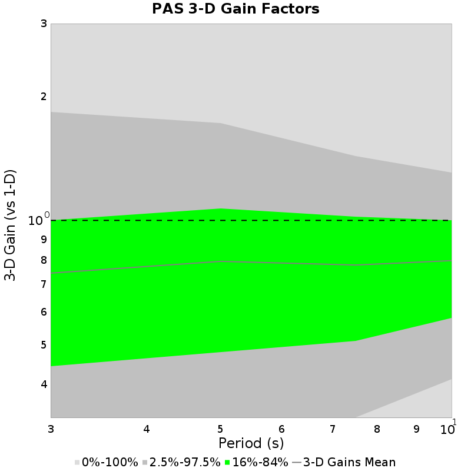
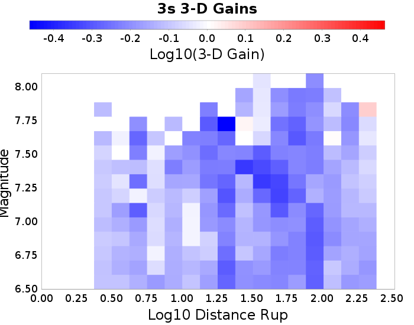
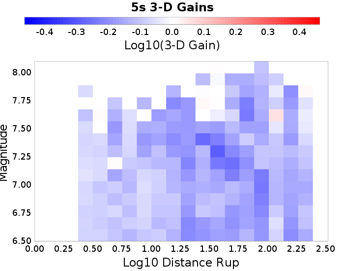
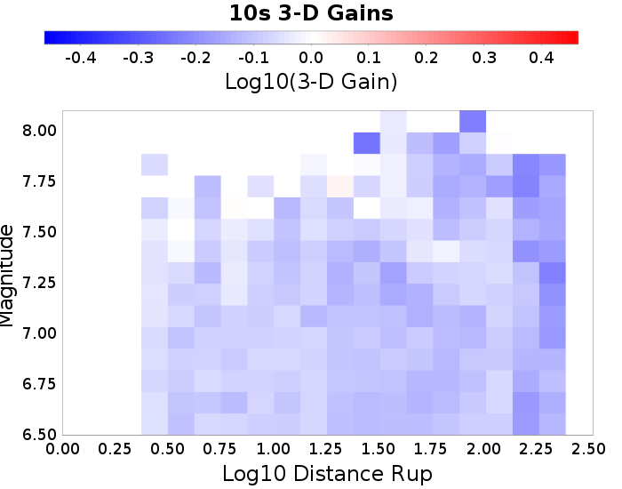

3-D vs 1-D Comparisons
3-D Model: RSQSim 2585
1-D Model: RSQSim/BBP
Table Of Contents
3-D vs 1-D Comparisons
PAS
PAS 3-D Gain Spectra
PAS 3-D Mag/Distance Gain Plots
PAS
(top)
PAS 3-D Gain Spectra
(top)

PAS 3-D Mag/Distance Gain Plots
(top)
3s
5s
7.5s
10s


